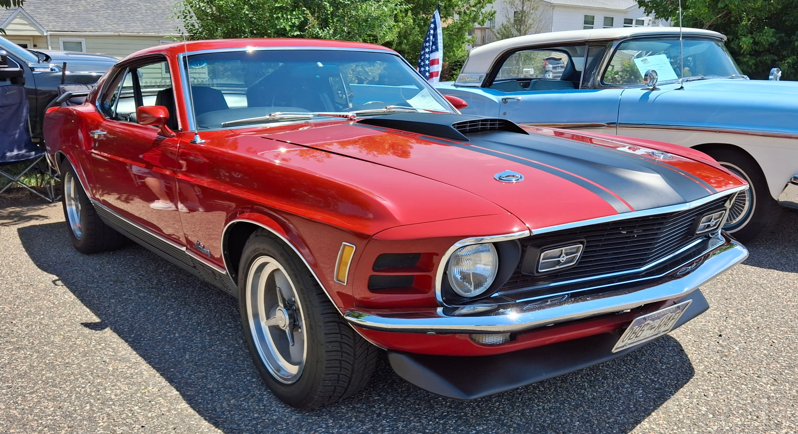
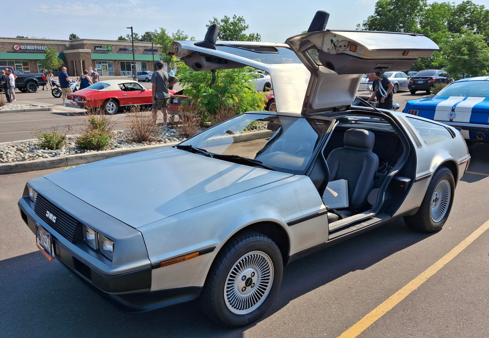
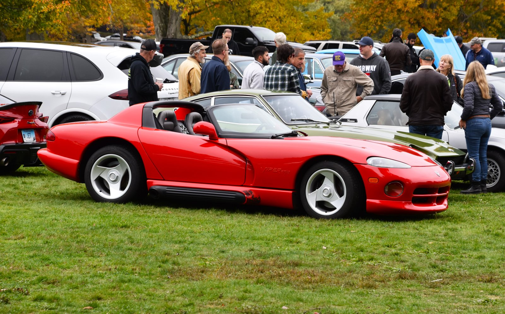
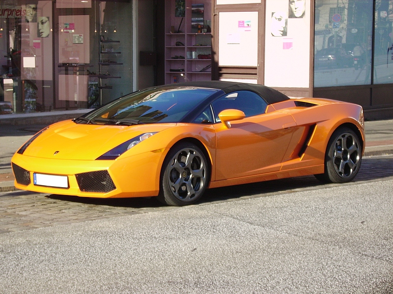
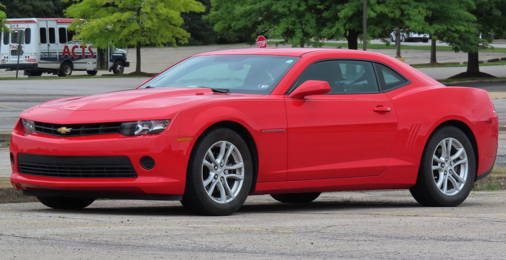
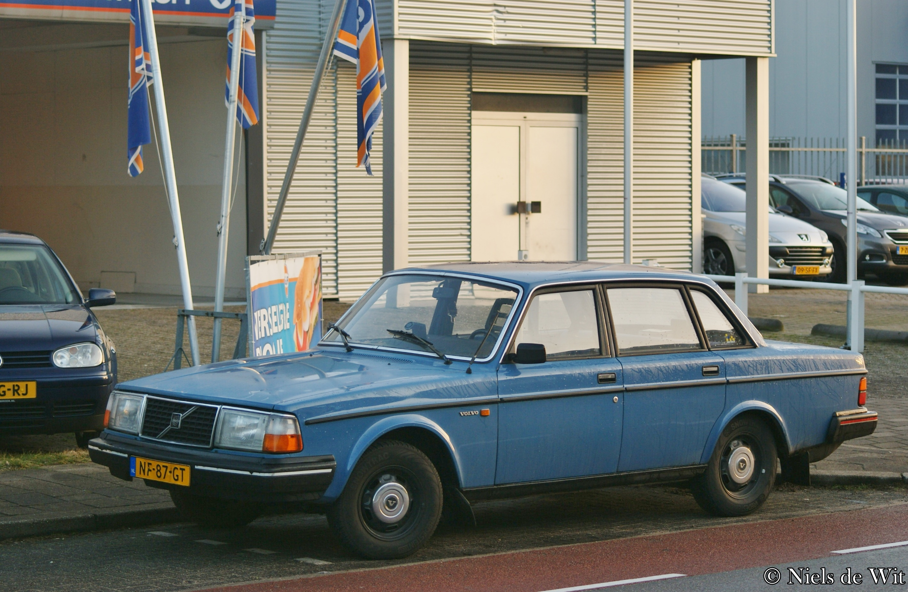
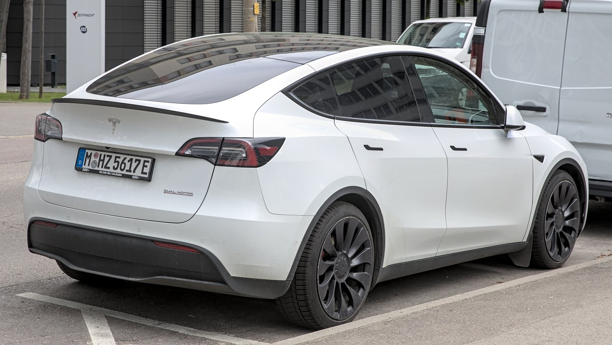

Cars used to feel different. But what does “character” actually mean?
When drivers argue that modern cars lack personality, they usually point to three complaints:
Did automotive paint palettes actually shrink?
Did vehicle body shapes and silhouettes converge?
What happened to mechanical variety and acoustics?
A feeling isn't data. We gathered 55 years of paint popularity, 16,469 classified body dimensions, and 29,880 powertrain records to measure what changed.





Identical street length. Inverted design priorities.

1980
2024